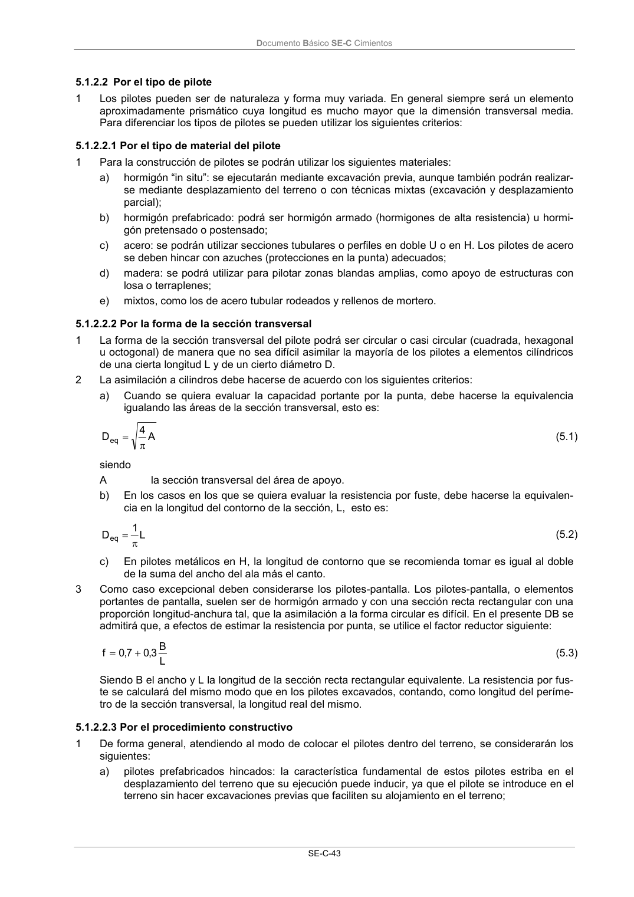

DB-SE-C Cimientos · edición 2019-12-20 · capa oficial
Documento DB-SE-C-oficial · SHA-256 del PDF a71133f4b0dca253e45ea3071c70f2a512354bcc5cd841bf89b1a502f567ac5e
Copia fiel del PDF fuente · Fuente oficial
Ficha de la disposición en la fuente oficial
Formatos: JSON del segmento · Markdown
5.1.2.2.2 Por la forma de la sección transversal 1 La forma de la sección transversal del pilote podrá ser circular o casi circular (cuadrada, hexagonal u octogonal) de manera que no sea difícil asimilar la mayoría de los pilotes a elementos cilíndricos de una cierta longitud L y de un cierto diámetro D. 2 La asimilación a cilindros debe hacerse de acuerdo con los siguientes criterios: a) Cuando se quiera evaluar la capacidad portante por la punta, debe hacerse la equivalencia igualando las áreas de la sección transversal, esto es: A 4 Deq (5.1) siendo A la sección transversal del área de apoyo. b) En los casos en los que se quiera evaluar la resistencia por fuste, debe hacerse la equivalen- cia en la longitud del contorno de la sección, L, esto es: L 1 Deq (5.2) c) En pilotes metálicos en H, la longitud de contorno que se recomienda tomar es igual al doble de la suma del ancho del ala más el canto. 3 Como caso excepcional deben considerarse los pilotes-pantalla. Los pilotes-pantalla, o elementos portantes de pantalla, suelen ser de hormigón armado y con una sección recta rectangular con una proporción longitud-anchura tal, que la asimilación a la forma circular es difícil. En el presente DB se admitirá que, a efectos de estimar la resistencia por punta, se utilice el factor reductor siguiente: L B 3,0 7,0 f (5.3) Siendo B el ancho y L la longitud de la sección recta rectangular equivalente. La resistencia por fus- te se calculará del mismo modo que en los pilotes excavados, contando, como longitud del períme- tro de la sección transversal, la longitud real del mismo.
